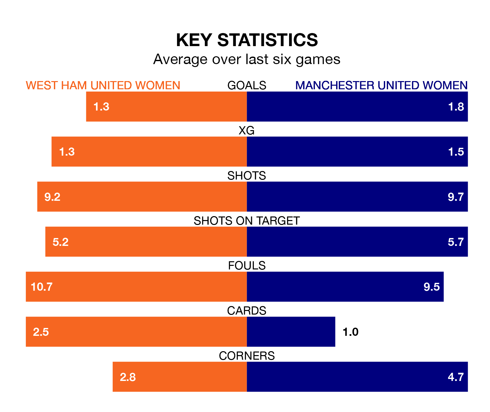

Struggling West Ham United Women face Manchester United Women at the Chigwell Construction Stadium on Sunday looking to build on a win in their last league outing.
After securing all three points with a 0-2 victory over Everton Women on February 18, the Hammers sit 10th in the FA Women's Super League.
They travel to play a Manchester United side fourth in the standings, who lost in their last match, 3-1 against Arsenal Women, on February 17.
With 31 goals in 14 games so far this season, Manchester United are scoring more than average in the league with 2.2 goals per game. And they are conceding fewer than average, letting in 18 goals at a rate of 1.3 per game.
West Ham United, meanwhile, are below average scorers, with 1.1 goals per game, compared to a league average of 1.6. They have conceded 2.1 goals per game.
In Mary Earps, the Red Devils can rely on one of the league's safest pair of hands. She has kept five clean sheets in her 14 appearances this season, and only one other 'keeper – Manchester City Women's Khiara Keating – has been able to prevent the opposition scoring on more occasions in the FA Women's Super League.
In the Hammers' net, Mackenzie Arnold has one clean sheet in 11 games. She has conceded a goal every 47 minutes, 60% more often than the 74 minutes between goals for Earps.
In the last 10 years, West Ham United and Manchester United have played each other on nine occasions. West Ham United won one of them, Manchester United seven, and they drew once.
On average, the Hammers scored 0.7 goals and the Red Devils 2.8 in those matches.
Their last meeting was on November 12, when Manchester United won 5-0 at home.
The hosts are in mixed form in the FA Women's Super League, with two wins and a draw from their last six games.
With three wins and three losses over that period, the away side's form is slightly better – they have taken nine points from 18, compared to West Ham United's seven.
Updated: 10:08 (UTC), 23/02/24